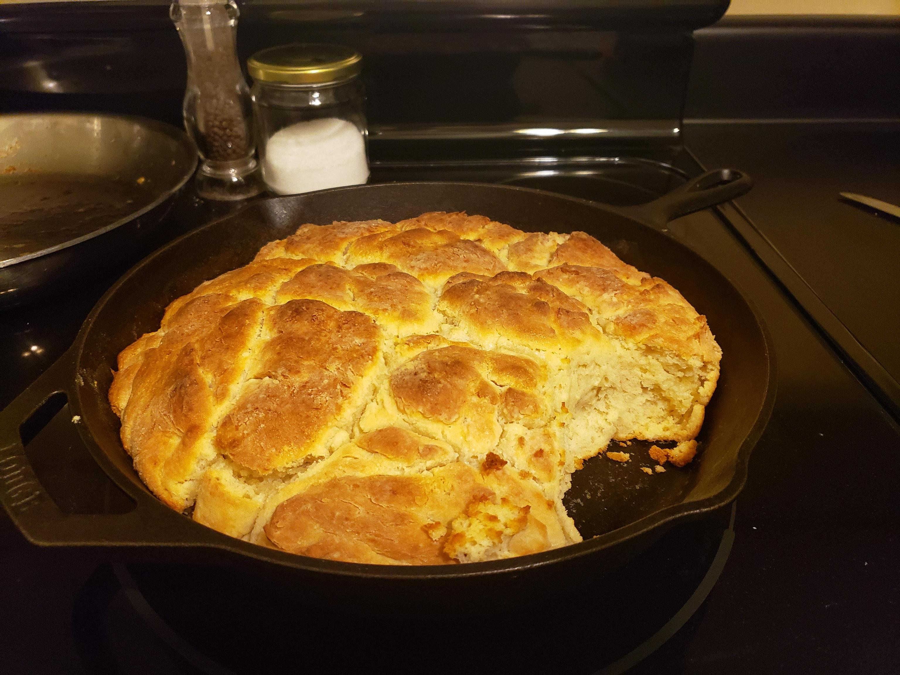

Biscuits

Description
This simple recipe is a cast-iron favorite! Start your oven, get out your best ingredients, and get to mixing!
Ingredients
- All purpose flour
- Sugar
- Salt
- Baking soda
- Baking powder
- Buttermilk
- Heavy creme
- Eggs
Steps
- Set oven to 425F
- Mix dry ingredients
- In separate bowl, mix eggs, then add wet ingredients
- Combine dry and wet ingredients. Consistency should be like cottage cheese.
- With some extra flour to the side, dip a 4oz lump of dough into the flour. Sprinkle some flour on top, shake off excess, and place into pan.
- Place pan in oven for around 35 minutes, checking 5 minutes before.